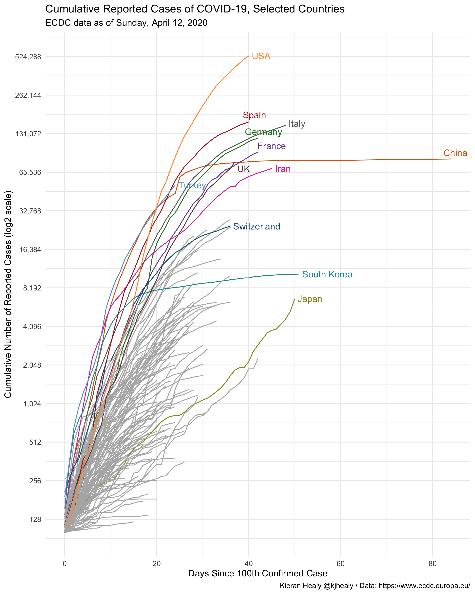
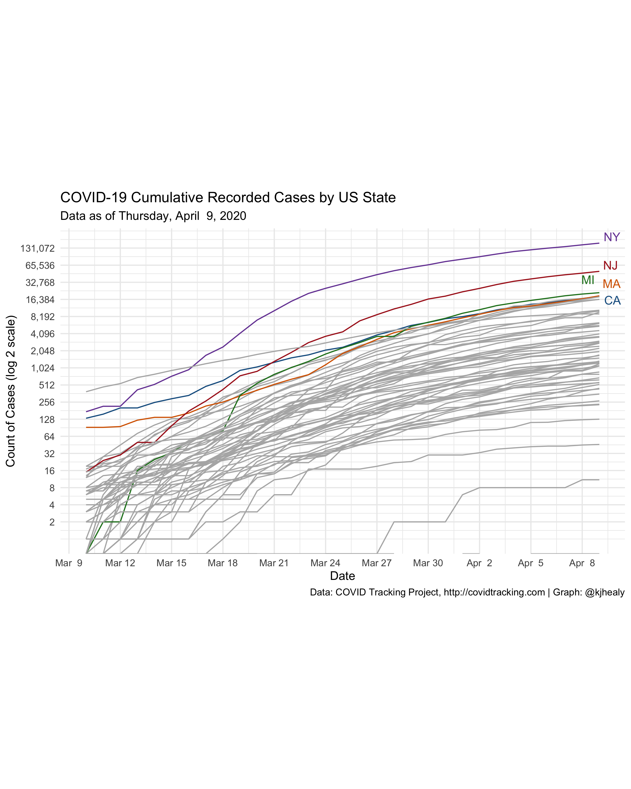
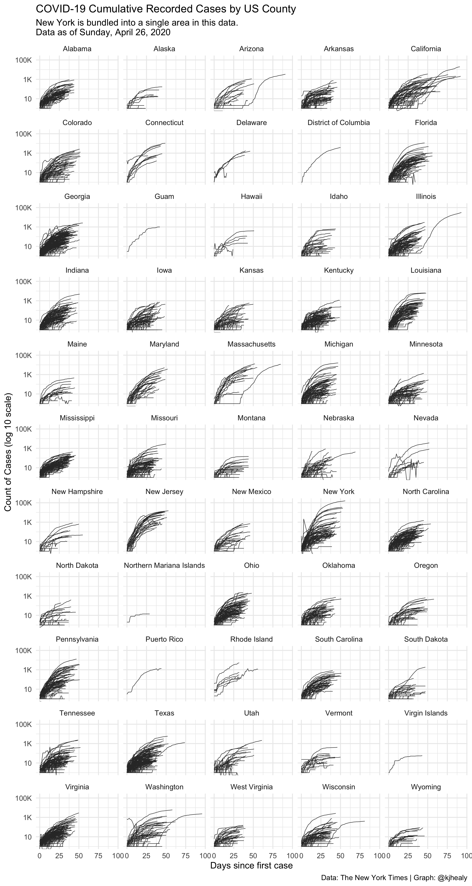
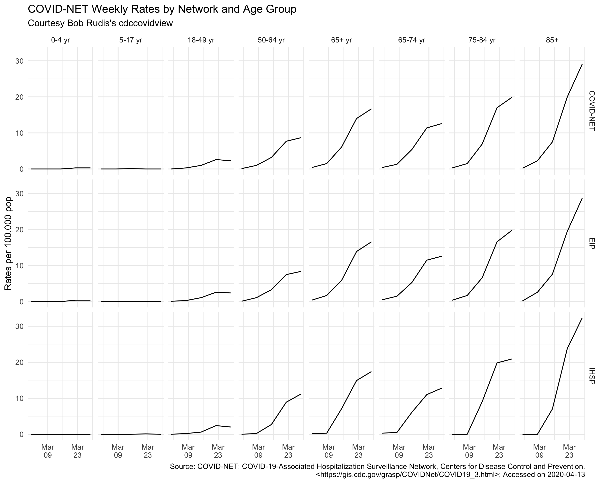
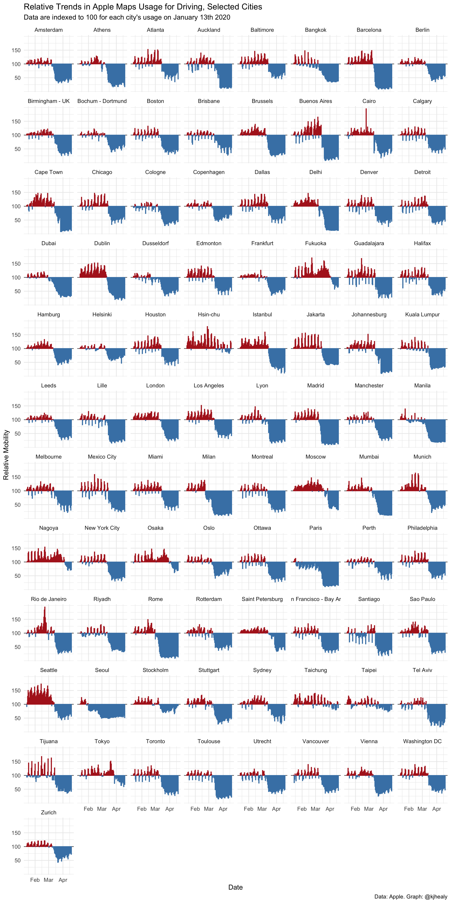
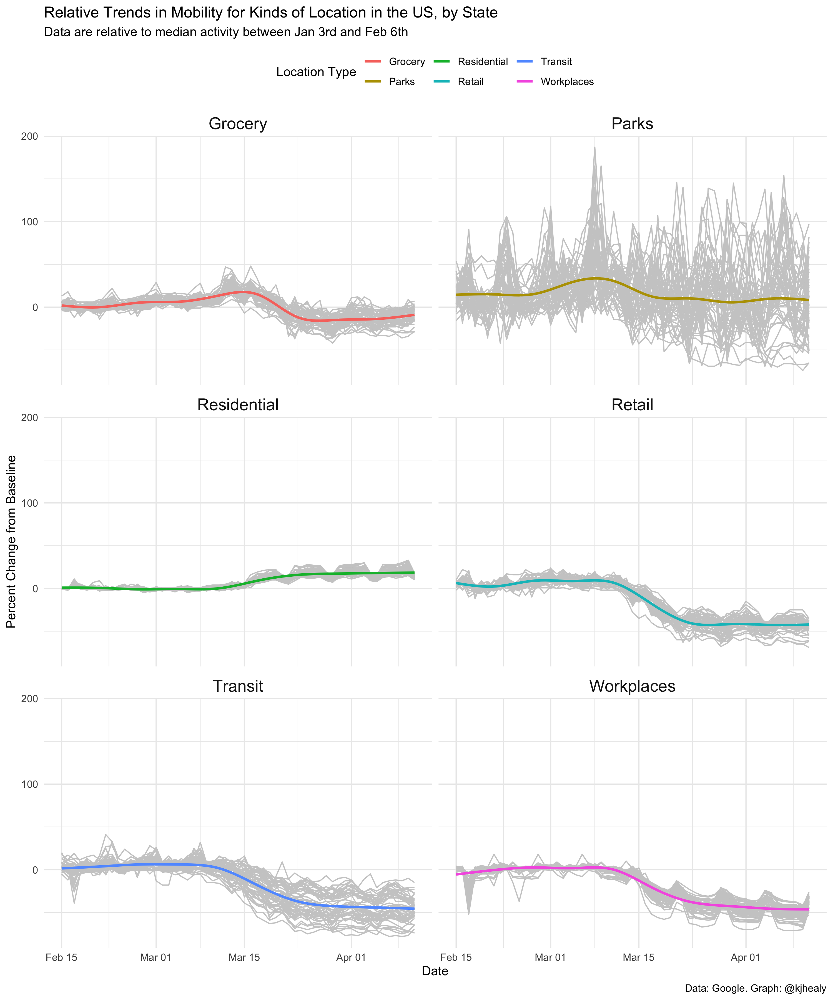

covdata is a data package for R. It provides COVID-19 related data from the following sources:
- National level case and mortality data from the European Centers for Disease Control.
- State-level case and mortality data for the United States from the COVID Tracking Project.
- State-level and county-level case and mortality data for the United States from the New York Times.
- Data from the US Centers for Disease Control’s Coronavirus Disease 2019 (COVID-19)-Associated Hospitalization Surveillance Network (COVID-NET). See below for details about this network and the scope of its coverage.
- Data from Apple on relative trends in mobility in cities and countries since mid-January of 2020, based on usage of their Maps application.
- Data from Google on relative trends in mobility in regions and countries since mid-January of 2020, based on location and activity information.
The data are provided as-is. More information about collection methods, scope, limits, and possible sources of error in the data can be found in the documentation provided by their respective sources. (Follow the links above.)
Data are current through Friday, April 24, 2020.
Installation
There are two ways to install the covdata package.
Install direct from GitHub
You can install the beta version of congress from GitHub with:
remotes::install_github("kjhealy/covdata")
Installation using drat
While using install_github() works just fine, it would be nicer to be able to just type install.packages("covdata") or update.packages("covdata") in the ordinary way. We can do this using Dirk Eddelbuettel’s drat package. Drat provides a convenient way to make R aware of package repositories other than CRAN.
First, install drat:
if (!require("drat")) { install.packages("drat") library("drat") }
Then use drat to tell R about the repository where covdata is hosted:
drat::addRepo("kjhealy")
You can now install covdata:
install.packages("covdata")
To ensure that the covdata repository is always available, you can add the following line to your .Rprofile or .Rprofile.site file:
drat::addRepo("kjhealy")
With that in place you’ll be able to do install.packages("covdata") or update.packages("covdata") and have everything work as you’d expect.
Note that my drat repository only contains data packages that are not on CRAN, so you will never be in danger of grabbing the wrong version of any other package.
Loading the Data
Country-Level Data from the ECDC
library(tidyverse) library(covdata) covnat #> # A tibble: 12,737 x 8 #> # Groups: iso3 [205] #> date cname iso3 cases deaths pop_2018 cu_cases cu_deaths #> <date> <chr> <chr> <dbl> <dbl> <dbl> <dbl> <dbl> #> 1 2019-12-31 Afghanistan AFG 0 0 37172386 0 0 #> 2 2019-12-31 Algeria DZA 0 0 42228429 0 0 #> 3 2019-12-31 Armenia ARM 0 0 2951776 0 0 #> 4 2019-12-31 Australia AUS 0 0 24992369 0 0 #> 5 2019-12-31 Austria AUT 0 0 8847037 0 0 #> 6 2019-12-31 Azerbaijan AZE 0 0 9942334 0 0 #> 7 2019-12-31 Bahrain BHR 0 0 1569439 0 0 #> 8 2019-12-31 Belarus BLR 0 0 9485386 0 0 #> 9 2019-12-31 Belgium BEL 0 0 11422068 0 0 #> 10 2019-12-31 Brazil BRA 0 0 209469333 0 0 #> # … with 12,727 more rows
Draw a log-linear graph of cumulative reported cases
## Libraries for the graphs library(ggrepel) library(paletteer) library(prismatic) ## Convenince "Not in" operator "%nin%" <- function(x, y) { return( !(x %in% y) ) } ## Countries to highlight focus_cn <- c("CHN", "DEU", "GBR", "USA", "IRN", "JPN", "KOR", "ITA", "FRA", "ESP", "CHE", "TUR") ## Colors cgroup_cols <- c(clr_darken(paletteer_d("ggsci::category20_d3"), 0.2)[1:length(focus_cn)], "gray70") covnat %>% filter(cu_cases > 99) %>% mutate(days_elapsed = date - min(date), end_label = ifelse(date == max(date), cname, NA), end_label = recode(end_label, `United States` = "USA", `Iran, Islamic Republic of` = "Iran", `Korea, Republic of` = "South Korea", `United Kingdom` = "UK"), cname = recode(cname, `United States` = "USA", `Iran, Islamic Republic of` = "Iran", `Korea, Republic of` = "South Korea", `United Kingdom` = "UK"), end_label = case_when(iso3 %in% focus_cn ~ end_label, TRUE ~ NA_character_), cgroup = case_when(iso3 %in% focus_cn ~ iso3, TRUE ~ "ZZOTHER")) %>% ggplot(mapping = aes(x = days_elapsed, y = cu_cases, color = cgroup, label = end_label, group = cname)) + geom_line(size = 0.5) + geom_text_repel(nudge_x = 0.75, segment.color = NA) + guides(color = FALSE) + scale_color_manual(values = cgroup_cols) + scale_y_continuous(labels = scales::comma_format(accuracy = 1), breaks = 2^seq(4, 19, 1), trans = "log2") + labs(x = "Days Since 100th Confirmed Case", y = "Cumulative Number of Reported Cases (log2 scale)", title = "Cumulative Reported Cases of COVID-19, Selected Countries", subtitle = paste("ECDC data as of", format(max(covnat$date), "%A, %B %e, %Y")), caption = "Kieran Healy @kjhealy / Data: https://www.ecdc.europa.eu/") + theme_minimal() #> Don't know how to automatically pick scale for object of type difftime. Defaulting to continuous. #> Warning: Removed 4630 rows containing missing values (geom_text_repel).

State-Level Data from the COVID Tracking Project
covus #> # A tibble: 49,842 x 5 #> date state fips measure count #> <date> <chr> <chr> <chr> <dbl> #> 1 2020-04-23 AK 02 positive 337 #> 2 2020-04-23 AK 02 negative 11824 #> 3 2020-04-23 AK 02 pending NA #> 4 2020-04-23 AK 02 hospitalized_currently 42 #> 5 2020-04-23 AK 02 hospitalized_cumulative NA #> 6 2020-04-23 AK 02 in_icu_currently NA #> 7 2020-04-23 AK 02 in_icu_cumulative NA #> 8 2020-04-23 AK 02 on_ventilator_currently NA #> 9 2020-04-23 AK 02 on_ventilator_cumulative NA #> 10 2020-04-23 AK 02 recovered 209 #> # … with 49,832 more rows
Draw a log-linear graph of cumulative reported US cases
## Which n states are leading the count of positive cases or deaths? top_n_states <- function(data, n = 5, measure = c("positive", "death")) { meas <- match.arg(measure) data %>% group_by(state) %>% filter(measure == meas, date == max(date)) %>% drop_na() %>% ungroup() %>% top_n(n, wt = count) %>% pull(state) } state_cols <- c("gray70", prismatic::clr_darken(paletteer_d("ggsci::category20_d3"), 0.2)) covus %>% group_by(state) %>% mutate(core = case_when(state %nin% top_n_states(covus) ~ "", TRUE ~ state), end_label = ifelse(date == max(date), core, NA)) %>% arrange(date) %>% filter(measure == "positive", date > "2020-03-09") %>% ggplot(aes(x = date, y = count, group = state, color = core, label = end_label)) + geom_line(size = 0.5) + geom_text_repel(segment.color = NA, nudge_x = 0.2, nudge_y = 0.1) + scale_color_manual(values = state_cols) + scale_x_date(date_breaks = "3 days", date_labels = "%b %e" ) + scale_y_continuous(trans = "log2", labels = scales::comma_format(accuracy = 1), breaks = 2^c(seq(1, 17, 1))) + guides(color = FALSE) + coord_equal() + labs(title = "COVID-19 Cumulative Recorded Cases by US State", subtitle = paste("Data as of", format(max(covus$date), "%A, %B %e, %Y")), x = "Date", y = "Count of Cases (log 2 scale)", caption = "Data: COVID Tracking Project, http://covidtracking.com | Graph: @kjhealy") + theme_minimal() #> Warning: Transformation introduced infinite values in continuous y-axis #> Warning: Transformation introduced infinite values in continuous y-axis #> Warning: Removed 15 row(s) containing missing values (geom_path). #> Warning: Removed 2434 rows containing missing values (geom_text_repel).

State-Level and County-Level (Cumulative) Data from the New York Times
nytcovstate #> # A tibble: 2,889 x 5 #> date state fips cases deaths #> <date> <chr> <chr> <dbl> <dbl> #> 1 2020-01-21 Washington 53 1 0 #> 2 2020-01-22 Washington 53 1 0 #> 3 2020-01-23 Washington 53 1 0 #> 4 2020-01-24 Illinois 17 1 0 #> 5 2020-01-24 Washington 53 1 0 #> 6 2020-01-25 California 06 1 0 #> 7 2020-01-25 Illinois 17 1 0 #> 8 2020-01-25 Washington 53 1 0 #> 9 2020-01-26 Arizona 04 1 0 #> 10 2020-01-26 California 06 2 0 #> # … with 2,879 more rows
nytcovcounty #> # A tibble: 84,143 x 6 #> date county state fips cases deaths #> <date> <chr> <chr> <chr> <dbl> <dbl> #> 1 2020-01-21 Snohomish Washington 53061 1 0 #> 2 2020-01-22 Snohomish Washington 53061 1 0 #> 3 2020-01-23 Snohomish Washington 53061 1 0 #> 4 2020-01-24 Cook Illinois 17031 1 0 #> 5 2020-01-24 Snohomish Washington 53061 1 0 #> 6 2020-01-25 Orange California 06059 1 0 #> 7 2020-01-25 Cook Illinois 17031 1 0 #> 8 2020-01-25 Snohomish Washington 53061 1 0 #> 9 2020-01-26 Maricopa Arizona 04013 1 0 #> 10 2020-01-26 Los Angeles California 06037 1 0 #> # … with 84,133 more rows
Draw a log-linear graph of cumulative US cases by county
nytcovcounty %>% mutate(uniq_name = paste(county, state)) %>% # Can't use FIPS because of how the NYT bundled cities group_by(uniq_name) %>% mutate(days_elapsed = date - min(date)) %>% ggplot(aes(x = days_elapsed, y = cases, group = uniq_name)) + geom_line(size = 0.25, color = "gray20") + scale_y_log10(labels = scales::label_number_si()) + guides(color = FALSE) + facet_wrap(~ state, ncol = 5) + labs(title = "COVID-19 Cumulative Recorded Cases by US County", subtitle = paste("New York is bundled into a single area in this data.\nData as of", format(max(nytcovcounty$date), "%A, %B %e, %Y")), x = "Days since first case", y = "Count of Cases (log 10 scale)", caption = "Data: The New York Times | Graph: @kjhealy") + theme_minimal() #> Don't know how to automatically pick scale for object of type difftime. Defaulting to continuous. #> Warning: Transformation introduced infinite values in continuous y-axis

US CDC Surveillance Network Data
This US Centers for Disase Control surveillance network conducts population-based surveillance for laboratory-confirmed COVID-19-associated hospitalizations in children (persons younger than 18 years) and adults in the United States. The current network covers nearly 100 counties in the 10 Emerging Infections Program (EIP) states (CA, CO, CT, GA, MD, MN, NM, NY, OR, and TN) and four additional states through the Influenza Hospitalization Surveillance Project (IA, MI, OH, and UT). The network represents approximately 10% of US population (~32 million people). Cases are identified by reviewing hospital, laboratory, and admission databases and infection control logs for patients hospitalized with a documented positive SARS-CoV-2 test. Data gathered are used to estimate age-specific hospitalization rates on a weekly basis and describe characteristics of persons hospitalized with COVID-19. Laboratory confirmation is dependent on clinician-ordered SARS-CoV-2 testing. Therefore, the unadjusted rates provided are likely to be underestimated as COVID-19-associated hospitalizations can be missed due to test availability and provider or facility testing practices. COVID-NET hospitalization data are preliminary and subject to change as more data become available. All incidence rates are unadjusted. Please use the following citation when referencing these data: “COVID-NET: COVID-19-Associated Hospitalization Surveillance Network, Centers for Disease Control and Prevention. WEBSITE. Accessed on DATE”.
Thanks to Bob Rudis’s cdccovidview package for making these data tractable to include.
cdc_hospitalizations #> # A tibble: 4,590 x 8 #> catchment network year mmwr_year mmwr_week age_category cumulative_rate weekly_rate #> <chr> <chr> <chr> <chr> <chr> <chr> <dbl> <dbl> #> 1 Entire Network COVID-NET 2020 2020 10 0-4 yr 0 0 #> 2 Entire Network COVID-NET 2020 2020 11 0-4 yr 0 0 #> 3 Entire Network COVID-NET 2020 2020 12 0-4 yr 0 0 #> 4 Entire Network COVID-NET 2020 2020 13 0-4 yr 0.4 0.4 #> 5 Entire Network COVID-NET 2020 2020 14 0-4 yr 0.8 0.4 #> 6 Entire Network COVID-NET 2020 2020 15 0-4 yr 1.1 0.3 #> 7 Entire Network COVID-NET 2020 2020 16 0-4 yr NA NA #> 8 Entire Network COVID-NET 2020 2020 17 0-4 yr NA NA #> 9 Entire Network COVID-NET 2020 2020 18 0-4 yr NA NA #> 10 Entire Network COVID-NET 2020 2020 19 0-4 yr NA NA #> # … with 4,580 more rows cdc_catchments #> # A tibble: 17 x 2 #> name area #> * <chr> <chr> #> 1 COVID-NET Entire Network #> 2 EIP California #> 3 EIP Colorado #> 4 EIP Connecticut #> 5 EIP Entire Network #> 6 EIP Georgia #> 7 EIP Maryland #> 8 EIP Minnesota #> 9 EIP New Mexico #> 10 EIP New York #> 11 EIP Oregon #> 12 EIP Tennessee #> 13 IHSP Entire Network #> 14 IHSP Iowa #> 15 IHSP Michigan #> 16 IHSP Ohio #> 17 IHSP Utah cdc_deaths_by_state #> # A tibble: 54 x 13 #> state covid_deaths total_deaths percent_expected_… pneumonia_deaths pneumonia_and_cov… all_influenza_deat… NA NA NA NA NA NA #> <chr> <chr> <chr> <chr> <chr> <int> <int> <dbl> <int> <int> <int> <chr> <chr> #> 1 2020-04-24… United States Total US 2020-02-01T00:00:… 2020-04-18T00:00:… 24555 654798 0.96 54962 11070 5571 <NA> <NA> #> 2 2020-04-24… Alabama Alabama 2020-02-01T00:00:… 2020-04-18T00:00:… 113 11553 0.9 714 34 83 <NA> <NA> #> 3 2020-04-24… Alaska Alaska 2020-02-01T00:00:… 2020-04-18T00:00:… NA 789 0.78 37 NA NA <NA> One or more data cells have counts … #> 4 2020-04-24… Arizona Arizona 2020-02-01T00:00:… 2020-04-18T00:00:… 156 14756 1.01 1034 85 103 <NA> <NA> #> 5 2020-04-24… Arkansas Arkansas 2020-02-01T00:00:… 2020-04-18T00:00:… 19 7245 0.94 485 NA 66 <NA> One or more data cells have counts … #> 6 2020-04-24… California California 2020-02-01T00:00:… 2020-04-18T00:00:… 813 64633 0.97 5437 450 541 <NA> <NA> #> 7 2020-04-24… Colorado Colorado 2020-02-01T00:00:… 2020-04-18T00:00:… 392 9936 1.03 838 243 90 <NA> <NA> #> 8 2020-04-24… Connecticut Connecticut 2020-02-01T00:00:… 2020-04-18T00:00:… NA 461 0 29 0 NA <NA> One or more data cells have counts … #> 9 2020-04-24… Delaware Delaware 2020-02-01T00:00:… 2020-04-18T00:00:… 28 1939 0.77 108 14 14 <NA> <NA> #> 10 2020-04-24… District of Co… District of Co… 2020-02-01T00:00:… 2020-04-18T00:00:… 44 1331 0.89 146 44 NA <NA> One or more data cells have counts … #> # … with 44 more rows nssp_covid_er_reg #> # A tibble: 538 x 9 #> week num_fac total_ed_visits visits pct_visits visit_type region source year #> <int> <int> <chr> <int> <dbl> <chr> <chr> <chr> <int> #> 1 41 202 130377 814 0.006 ili Region 1 Emergency Departments 2019 #> 2 42 202 132385 912 0.00700 ili Region 1 Emergency Departments 2019 #> 3 43 202 131866 883 0.00700 ili Region 1 Emergency Departments 2019 #> 4 44 203 128256 888 0.00700 ili Region 1 Emergency Departments 2019 #> 5 45 203 127466 979 0.008 ili Region 1 Emergency Departments 2019 #> 6 46 202 125306 1188 0.009 ili Region 1 Emergency Departments 2019 #> 7 47 202 128877 1235 0.01 ili Region 1 Emergency Departments 2019 #> 8 48 202 124781 1451 0.012 ili Region 1 Emergency Departments 2019 #> 9 49 202 125939 1362 0.011 ili Region 1 Emergency Departments 2019 #> 10 50 202 130430 1405 0.011 ili Region 1 Emergency Departments 2019 #> # … with 528 more rows
age_f <- c( "0-4 yr", "5-17 yr", "18-49 yr", "50-64 yr", "65+ yr", "65-74 yr", "75-84 yr", "85+") cdc_hospitalizations %>% mutate(start = cdccovidview::mmwr_week_to_date(mmwr_year, mmwr_week)) %>% filter(!is.na(weekly_rate)) %>% filter(catchment == "Entire Network") %>% select(start, network, age_category, weekly_rate) %>% filter(age_category != "Overall") %>% mutate(age_category = factor(age_category, levels = age_f)) %>% ggplot() + geom_line(aes(start, weekly_rate)) + scale_x_date( date_breaks = "2 weeks", date_labels = "%b\n%d" ) + facet_grid(network ~ age_category) + labs(x = NULL, y = "Rates per 100,000 pop", title = "COVID-NET Weekly Rates by Network and Age Group", subtitle = "Courtesy Bob Rudis's cdccovidview", caption = sprintf("Source: COVID-NET: COVID-19-Associated Hospitalization Surveillance Network, Centers for Disease Control and Prevention.\n<https://gis.cdc.gov/grasp/COVIDNet/COVID19_3.html>; Accessed on %s", Sys.Date())) + theme_minimal()

Apple Mobility Data
Apple has made aggregated data available on relative trends in use of its Maps data across a range of cities, regions, and countries. Data show relative volume of directions requests per country/region or city compared to a baseline volume on January 13th, 2020. Apple defines the day as midnight-to-midnight, Pacific time. Cities represent usage in greater metropolitan areas and are stably defined during this period. In many countries/regions and cities, relative volume has increased since January 13th, consistent with normal, seasonal usage of Apple Maps. Day of week effects are important to normalize as you use this data. Data that is sent from users’ devices to the Apple Maps service is associated with random, rotating identifiers so Apple does not have a profile of individual movements and searches. Apple Maps has no demographic information about its users, and so cannot make any statements about the representativeness of its usage against the overall population.
vec_brks <- c(-50, 0, 50) vec_labs <- vec_brks + 100 apple_mobility %>% filter(geo_type == "city", transportation_type == "driving") %>% mutate(over_under = index < 100, index = index - 100) %>% ggplot(mapping = aes(x = date, y = index, group = region, color = over_under)) + geom_hline(yintercept = 0, color = "gray40") + geom_col() + scale_y_continuous(breaks = vec_brks, labels = vec_labs) + scale_color_manual(values = c("firebrick", "steelblue")) + facet_wrap(~ region, ncol = 8) + guides(color = FALSE) + labs(x = "Date", y = "Relative Mobility", title = "Relative Trends in Apple Maps Usage for Driving, Selected Cities", subtitle = "Data are indexed to 100 for each city's usage on January 13th 2020", caption = "Data: Apple. Graph: @kjhealy") + theme_minimal()

Google Mobility Reports
These Community Mobility Reports aim to provide insights into what has changed in response to policies aimed at combating COVID-19. The reports chart movement trends over time by geography, across different categories of places such as retail and recreation, groceries and pharmacies, parks, transit stations, workplaces, and residential. Each Community Mobility Report dataset is presented by location and highlights the percent change in visits to places like grocery stores and parks within a geographic area. These datasets show how visits and length of stay at different places change compared to a baseline. Changes for each day are compared to a baseline value for that day of the week:
- The baseline is the median value, for the corresponding day of the week, during the 5-week period Jan 3–Feb 6, 2020.
- The datasets show trends over several months.
- What data is included in the calculation depends on user settings, connectivity, and whether it meets Google’s privacy threshold. If the privacy threshold isn’t met (when somewhere isn’t busy enough to ensure anonymity) no change is shown for the day.
google_mobility %>% filter(country_region_code == "US", !is.na(sub_region_1), is.na(sub_region_2)) %>% mutate(type = tools::toTitleCase(type)) %>% ggplot(mapping = aes(x = date, y = pct_diff, group = sub_region_1)) + geom_line(size = 0.5, color = "gray80") + geom_smooth(aes(color = type, group = 1), se = FALSE) + facet_wrap(~ type, ncol = 2) + labs(x = "Date", y = "Percent Change from Baseline", title = "Relative Trends in Mobility for Kinds of Location in the US, by State", subtitle = "Data are relative to median activity between Jan 3rd and Feb 6th", color = "Location Type", caption = "Data: Google. Graph: @kjhealy") + theme_minimal() + theme(legend.position = "top", strip.text = element_text(size = rel(1.3))) #> `geom_smooth()` using method = 'gam' and formula 'y ~ s(x, bs = "cs")'

Citing the package
citation("covdata") #> #> To cite the package `covdata` in publications use: #> #> Kieran Healy. 2020. covdata: COVID-19 Case and Mortality Time Series. R package version 0.1.0, <http://kjhealy.github.io/covdata>. #> #> A BibTeX entry for LaTeX users is #> #> @Manual{, #> title = {covdata: COVID-19 Case and Mortality Time Series}, #> author = {Kieran Healy}, #> year = {2020}, #> note = {R package version 0.1.0}, #> url = {http://kjhealy.github.io/covdata}, #> }
Mask icon in hex logo by Freepik.